给大模型配「draft模型」（推测解码的小草稿模型）是提升推理吞吐性价比的做法，但把draft训练本身做到又快又稳，门槛不低。Lightning（Lightseek）宣告发布Kimi K3的draft系列：kimi-k3-eagle3-mla、kimi-k3-dflash2、kimi-k3-dspark：全部用TorchSpec在40块GB200 + disaggregated训练模式下训出，并把2.5× 训练吞吐、4.5× 预处理提速这些工程成果拆开讲。
这是篇「release + benchmarking + systems细节」密度相当高的技术文：为什么低并发下DFlash2胜过EAGLE3、K3的稀疏MoE与KDA/gated-MLA会怎样抬高额外验证token的成本、anchored-EAGLE如何不再对每一个token都做TTT rollout……下面把关键方法和真实数字一条条还原给你。
draft（草稿）模型核心在「一次猜N个token，再让大模型瓶颈层一次性验证」。torch生态里TorchSpec已是把生成hidden states→丢给draft训练器做探索的框架层实现。这次的三个型号都属于同一套base：都走Multi-Latent Attention(MLA) 骨干：推理时省KV cache、也好接进PD disaggregation与统一KV布局；跑在40块GB200的异步/disaggregated训练里，配置recipe随文公开。
个从DSpark的容量说明值得读一遍的注脚：受资源约束，DSpark的checkpoint比DFlash2训的epoch更少：下文凡涉DSpark的对比都要带上这个前提。
先看「接受长度」。作者跨10个常见benchmark（math / code / retrieval-QA / 中文 / 对话）比较三只draft，采样统一temperature 1.0、top_p 0.95、max reasoning effort；档位不同：EAGLE3以draft/verify depth 3/4跑，DFlash2与DSpark用7/8。接受率越高，代表大模型越常收下草稿、越省再生成本。（源文此处的acceptance-length对比图未随文发布，结论以文字为准。）
但accept rate只是代理，真实收益要看和引擎接起来的端到端吞吐。他们用SPEED-Bench（混合low/mid/high熵负载、同上采样默认）当稳定引擎TPS，作者认为它贴近生产流量。结论一句话：低并发时DFlash2好于EAGLE3，并发越高差距越被磨平。
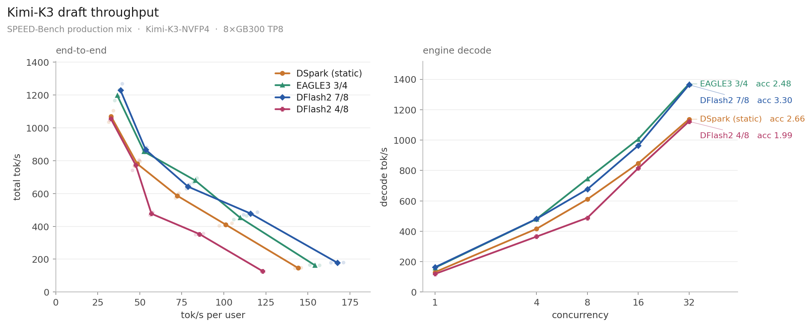
DFlash2的补法是一次出一条更长的draft block：单块里直接多吐几个候选token，于是更长的accepted前缀会一次砍掉一串串行的目标步（target steps）：batch小的时候这个收益很实在。
但跨过batch≈32后，接受长度变长就不再能补偿「为验证者而多花的开销」了。原因在生产采样这一层：temperature 1.0会让目标分布熵偏高，靠后的位置越来越难被accept，于是多出来的那一段验证多半是白做的尾巴；EAGLE3更短的3/4窗口恰好少浪费这截尾。
而K3更让「多验证几步」变贵的两条体质必须单独拎出来看：它们是这篇里最重要的insight：① K3是稀疏MoE：多一「验证token」，expert的FLOPs与dispatch是按 *验证宽度*(不是幸存token数) 同步放大；② K3是KDA与gated-MLA的3:1混合：KDA(延迟的循环/复核状态) 必须随每个推测token advance-rewind，draft宽度越宽replay的图越多；相比之下像K2.6这种纯MLA模型能在额外query token上复用压缩KV，多出的验证位从attention计算里捡回更多收益。
三只全部MLA。作者在benchmark里发现DSpark的长上下文场景脑袋常常卡在attention，于是让前4层换Sliding Window Attention（SWA）。定稿骨架：DFlash2 = 4层SWA + 1层full-MLA；DSpark = 5层full-MLA（同为MLA/半窗改动，推理时KV/Kernel代价不同）。
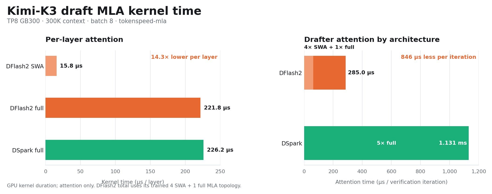
Kimi K3塞不进8块GB200，得先用16块把权重shard开。他们选pipeline parallel而非其它sharding：因为把all-reduce压成只在pp边界传hidden states的p2p，能把通信降下来给吞吐让路：TorchSpec对vLLM推理引擎加了通用pipeline parallel。
为了不白等，每一级pp rank攒够hidden states就异步写进Mooncake，让计算别撞上I/O的bubble：prefill越深、生产队列越多，吞吐延展得越顺。
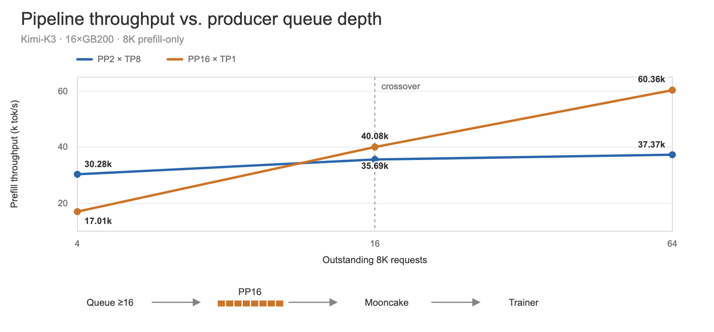
传统EAGLE-3训练是在每一个token上做TTT(起头-再rollout) rollout：序列一长，全部token都要额外预测与占内存，训练贵。
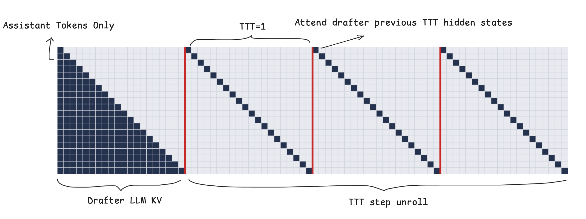
DFlash给出另一条路：随机抽一些“anchor tokens”，从每个anchor去预测N个块的续写，实现方式是给每次块预测造一条双向attention mask；anchor数量不随序列长度膨胀，长序列下它们“等权贡献”而不是“主导整趟run”，训练更稳。
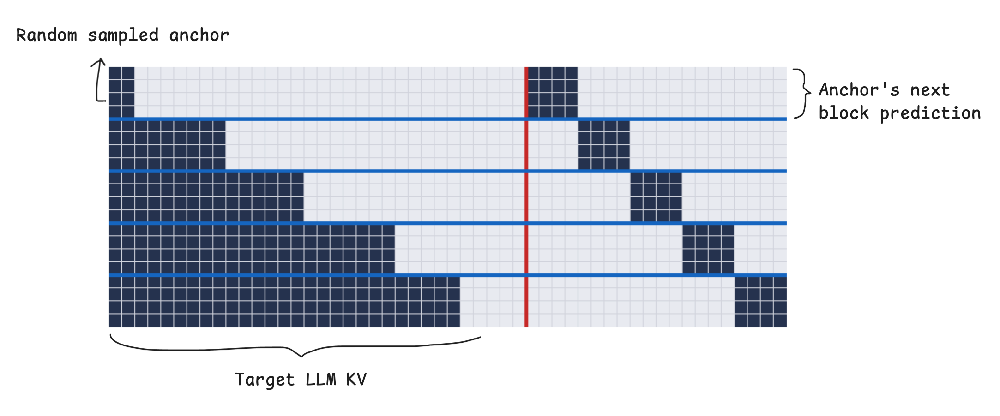
把两者一拍：EAGLE训练不再对每个token都rollout，而是抽取随机anchor。关键点在于：没被抽中的token反正会通过KV cache一路贡献给attention，所以不需要全覆盖也能拿到很接近的结果。
由此实现了一个等式红利：不同输入长度的样本被等概率采样，同样的drafter尺寸下能吸进更多数据，同时attention侧的昂贵计算与HBM占用被大幅锯掉（对MLA版drafter，attention加速见原文Table 1）。
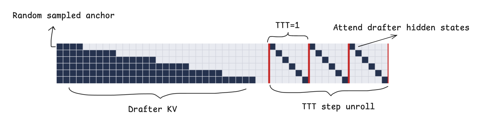
推测解码训练想扩规模可以加DP worker，也可以加大batch。大batch行之有效，因为训练主要被EAGLE TTT那部分HBM/memory带宽喂饱。但直接加大batch并不会线性加速：浪费来自padding：一个batch里、以及跨worker之间，不同长度的序列必须pad到同一形状，于是大量token只是在“陪跑”，不给训练贡献梯度。
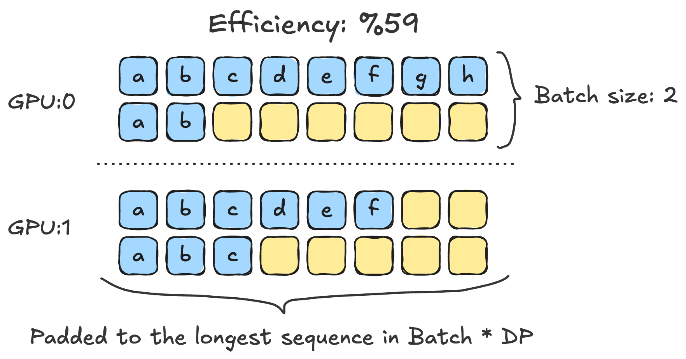
解法很朴素但高效：先把序列按长度排好，把长度接近的塞进同一个batch（图中黄色 = 仍浪费的后补填充，白 = 可跳过的部分）。
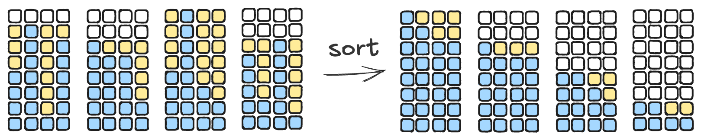
按长度分桶后，剩下的黄块更少了，训练每一步做的“有用功”因此变多：这就是那一路2.5× 里的主要贡献之一。
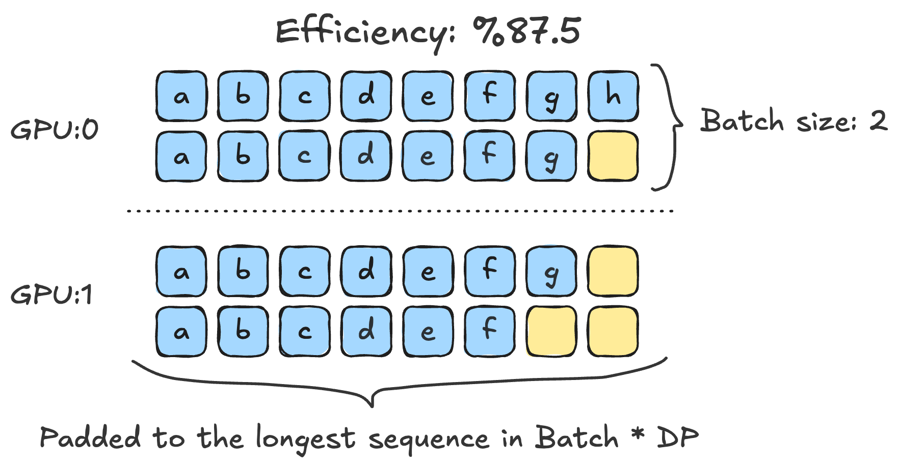
把 .item() 从前端计数里挪走，是最容易见效的一处：主线程调用 .item() 会强制CPU等还没落地的GPU算子。训练指标这些值最终要到CPU，但不该阻塞当前step：所以把指标上报整体延后一拍。
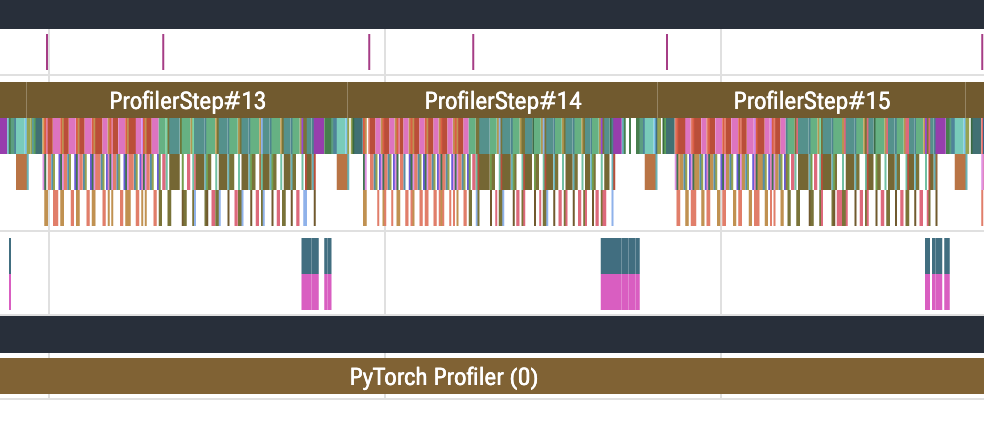
组合拳还包括：切到fused Adam，用 `torch._foreach_` 批量替代Python循环。三者一起让CPU不再无缘无故截停GPU。Torch Profiler的trace在去除同步前：后也照了下来，供对照“等待的空洞”消失了多少。
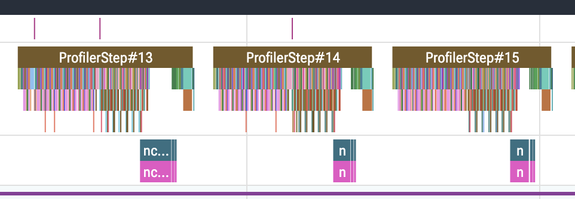
训练前TorchSpec要把raw dialog转成token id，结果会缓存；但对每份新数据集，预处理仍卡在critical path。量级到百万条对话时，两个multiprocessing行为把阶段拖贵了：
① 传张量回父进程：进程间传torch张量走shared memory，而每个张量要耗一个文件描述符。少量大张量没问题，但一百万个“小结果”会把父进程的fd榨干。改成返回NumPy数组的bytes、再由 `torch.from_numpy` 装配，结果收集从498秒→23秒。
② 建池时机：先建worker pool再加载数据集，让worker继承的空列表在队列里收固定分到的输入即可，避免重复搬运整份dataset：百万行tokenize从1436秒→319秒。两项合计即4.5×。
收尾还有两条工程钩子：Offline training：把目标模型在离线先把hidden states落盘，draft再对着文件训练，二者不再抢同一批GPU、固定数据集反复实验也划算；以及Nightly CI + Docker：把vLLM patch打包进docker镜像（starts从镜像起，免去每个人本地再打同样的patch与重做一致性检查），每日CI校验TorchSpec工作流收敛行为正常。最终在4×GB200、bs=2上训练吞吐合计提升约2.5×。
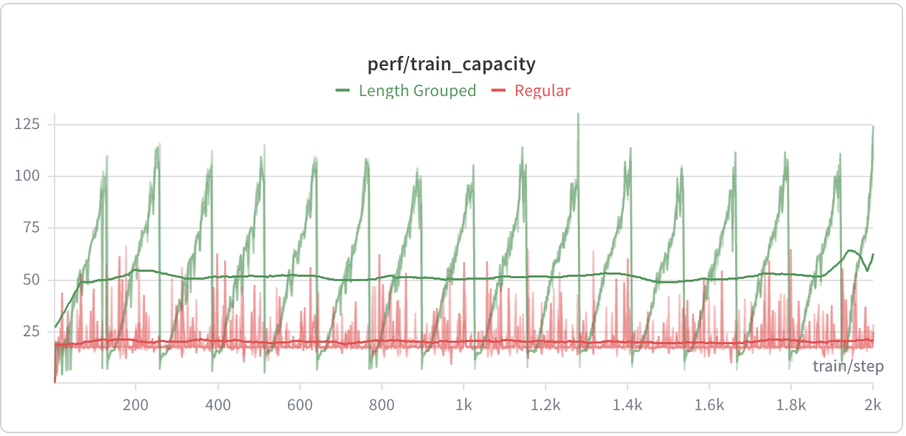
参考：https://lightseek.org/blog/kimi-k3-draft-collection.html